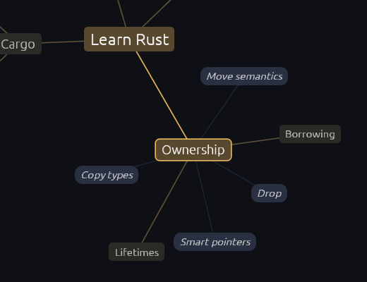

Talking to AI is like a late‑night conversation at a party. Some of it's true.
Some of it's made up.
None of it sticks.
This time, you decide what's worth keeping.
Try it in your browser Start your first map
Not a notes app. A place to work out what you think.

How it works
Type an idea
One idea or topic. Brainstorm it a few branches at a time, map it out whole at once, or start from a template such as Pros and cons or SWOT.
Keep what fits
The AI suggests branches as ghosts. Keep the good ones with a click, ask for more with M, or add your own with Tab. Nothing is saved until you keep it.
Grow notes with sources
Every node has a Markdown note. Learn more and Examples add depth with links you can check, and Mind-Me marks the dead ones.
What's different
Plain Markdown files
A map is a .md file on your disk: the title is the root, bullets are branches, notes sit under them. Any editor can open it. No account, no cloud.
Bring your own AI
Use the Claude subscription you already pay for, an API key, or a free model running on your computer with Ollama. Mind-Me runs no servers.
Themes you already know
Tokyo Night, Catppuccin, Gruvbox, Nord, Everforest, Rosé Pine, Flexoki and more, in light and dark. On Omarchy it follows your system theme.
Native and fast
Written in Rust. Starts in a blink, uses no CPU when idle, and works from the keyboard: arrows, Tab, Enter and M.


Click a picture to see the whole window.
Pricing
Ready to run
Free during the beta
Then $20 once for every 1.x release. No subscription: you bring your own AI, so there is nothing to bill monthly. Card or UPI.
Get the betaBuild it yourself
Free always
Mind-Me is open source under the GPL-3.0. Clone it and run cargo build --release. That is the deal, not a loophole.
Releases
v0.1 beta · the first public build
macOS (Apple silicon) Linux (AppImage) Windows (zip) Release notes
Linux also comes as a tarball. Intel Macs can build it from source for now. On Windows, unzip it and run Mind-Me.exe.
FAQ
How is this different from Obsidian?
Obsidian's graph comes from links you make by hand. In Mind-Me the AI suggests branches and asks you questions, and you keep what fits. Use Obsidian once you know what you think, and Mind-Me while you're still finding out. A map is a plain Markdown file, so it can live in your Obsidian vault too.
Which AI can I use?
- Claude Pro or Max, through the
claudecommand you are logged in to. - An API key for Anthropic, OpenAI or OpenRouter, or for another OpenAI-style URL.
- Ollama, with a model that runs on your computer.
- Any other command that reads a prompt and prints a reply.
The first launch asks you to pick one. You can add more in Settings.
What does Mind-Me send, and where?
Mind-Me has no servers, so nothing goes to us. Your maps stay as Markdown files on your computer. Mind-Me sends data only to these places:
- The AI you picked: the names of the current node and the nodes above it, and your Grill me answers. Learn more, Examples and Discuss also send that node's note and your recent Discuss messages. Writing guides you turned on go with them.
- Wikipedia and Wikimedia Commons: the names of the current node and its parent, to find its card and pictures. To stop this, turn off Wikipedia card in Settings, Notes.
- The sites a note links to: Mind-Me opens each
httpslink once, to check that it still works. It never opens links to your own computer or network. - The address of a picture in a note: Mind-Me downloads the picture to show it.
This website counts visits with PostHog, without cookies. The app sends nothing to PostHog.
macOS says it cannot check Mind-Me. What do I do?
Beta builds are not signed yet. The first time, right-click Mind-Me and choose Open. Or open System Settings, go to Privacy & Security, and click Open Anyway. Signed builds come with version 1.0.
Windows says it protected my PC. What do I do?
Beta builds are not signed yet, so SmartScreen warns the first time. Click More info, then Run anyway. Signed builds come with version 1.0.
Does the $20 include updates?
Yes. $20 gets you every 1.x release, and you keep each one. There is no license key. Version 2.0 may be a paid upgrade.